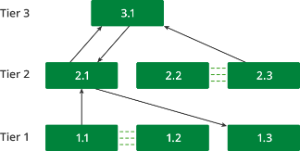
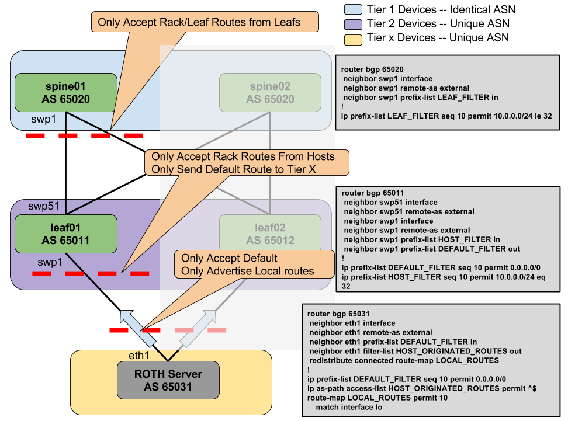

Border Gateway Protocol - BGP
BGP is the routing protocol that runs the Internet. It is an increasingly popular protocol for use in the data center as it lends itself well to the rich interconnections in a Clos topology. Specifically:
-
It does not require routing state to be periodically refreshed unlike OSPF.
-
It is less chatty than its link-state siblings. For example, a link or node transition can result in a bestpath change, causing BGP to send updates.
-
It is multi-protocol and extensible.
-
There are many robust vendor implementations.
-
The protocol is very mature and comes with many years of operational experience.
This IETF draft provides further details of the use of BGP within the data center.
Contents
Autonomous System Number (ASN)
One of the key concepts in BGP is an autonomous system number or ASN. An autonomous system is defined as a set of routers under a common administration. Since BGP was originally designed to peer between independently managed enterprises and/or service providers, each such enterprise is treated as an autonomous system, responsible for a set of network addresses. Each such autonomous system is given a unique number called its ASN. ASNs are handed out by a central authority (ICANN). However, ASNs between 64512 and 65535 are reserved for private use. Using BGP within the data center relies on either using this number space or else using the single ASN you own.
The ASN is central to how BGP builds a forwarding topology. A BGP route advertisement carries with it not only the originator’s ASN, but also the list of ASNs that this route advertisement has passed through. When forwarding a route advertisement, a BGP speaker adds itself to this list. This list of ASNs is called the AS path. BGP uses the AS path to detect and avoid loops.
ASNs were originally 16-bit numbers, but were later modified to be 32-bit. Quagga supports both 16-bit and 32-bit ASNs, but most implementations still run with 16-bit ASNs.
eBGP and iBGP
When BGP is used to peer between autonomous systems, the peering is referred to as external BGP or eBGP. When BGP is used within an autonomous system, the peering used is referred to as internal BGP or iBGP. eBGP peers have different ASNs while iBGP peers have the same ASN.
While the heart of the protocol is the same when used as eBGP or iBGP, there is a key difference in the protocol behavior between use as eBGP and iBGP: an iBGP speaker does not forward routing information learned from one iBGP peer to another iBGP peer to prevent loops. eBGP prevents loops using the AS_Path attribute.
Therefore, all iBGP speakers need to be peered with each other in a full mesh. In a large network, this requirement can quickly become unscalable. The most popular method to scale iBGP networks is to introduce a route reflector.
Route Reflectors
Route reflectors are quite easy to understand in a Clos topology. In a two-tier Clos network, the leaf (or tier 1) switches are the only ones connected to end stations. Subsequently, this means that the spines themselves do not have any routes to announce. They’re merely reflecting the routes announced by one leaf to the other leaves. Thus, the spine switches function as route reflectors while the leaf switches serve as route reflector clients.
In a three-tier network, the tier 2 nodes (or mid-tier spines) act as both route reflector servers and route reflector clients. They act as route reflectors because they announce the routes learned from the tier 1 nodes to other tier 1 nodes and to tier 3 nodes. They also act as route reflector clients to the tier 3 nodes, receiving routes learned from other tier 2 nodes. Tier 3 nodes act only as route reflectors.
In the following illustration, tier 2 node 2.1 is acting as a route reflector server, announcing the routes between tier 1 nodes 1.1 and 1.2 to tier 1 node 1.3. It is also a route reflector client, learning the routes between tier 2 nodes 2.2 and 2.3 from the tier 3 node, 3.1.

Configuring route-reflector-client Requires Specific Order
When configuring a route to be a route reflector client, the Quagga configuration must be specified in a specific order; otherwise, the router will not be a route reflector client.
The net add bgp neighbor <IPv4/IPV6> route-reflector-client command must be done after the net add bgp neighbor <IPV4/IPV6> activate command; otherwise, the route-reflector-client command is ignored. For example:
cumulus@switch:~$ net add bgp ipv4 unicast neighbor 14.0.0.9 activate cumulus@switch:~$ net add bgp neighbor 14.0.0.9 next-hop-selfcumulus@switch:~$ net add bgp neighbor 14.0.0.9 route-reflector-client >>> Must be after activate cumulus@switch:~$ net add bgp neighbor 2001:ded:beef:2::1 remote-as 65000cumulus@switch:~$ net add bgp ipv6 unicast redistribute connectedcumulus@switch:~$ net add bgp maximum-paths ibgp 4 cumulus@switch:~$ net add bgp neighbor 2001:ded:beef:2::1 activate cumulus@switch:~$ net add bgp neighbor 2001:ded:beef:2::1 next-hop-self cumulus@switch:~$ net add bgp neighbor 2001:ded:beef:2::1 route-reflector-client >>> Must be after activate ECMP with BGP
If a BGP node hears a prefix p from multiple peers, it has all the information necessary to program the routing table to forward traffic for that prefix p through all of these peers. Thus, BGP supports equal-cost multipathing (ECMP).
In order to perform ECMP in BGP, you may need to configure net add bgp bestpath as-path multipath-relax (if you're using eBGP).
Maximum Paths
In Cumulus Linux, the BGP maximum-paths setting is enabled by default, so multiple routes are already installed. The default setting is 64 paths.
BGP for Both IPv4 and IPv6
Unlike OSPF, which has separate versions of the protocol to announce IPv4 and IPv6 routes, BGP is a multi-protocol routing engine, capable of announcing both IPv4 and IPv6 prefixes. It supports announcing IPv4 prefixes over an IPv4 session and IPv6 prefixes over an IPv6 session. It also supports announcing prefixes of both these address families over a single IPv4 session or over a single IPv6 session.
Configuring BGP
A basic BGP configuration looks like the following. However, the rest of this chapter discusses how to configure various other features, from unnumbered interfaces to route maps.
-
Enable the BGP and Zebra daemons, zebra and bgpd, then enable the Quagga service and start it, as described in Configuring Quagga.
-
Identify the BGP node by assigning an ASN and router-id:
cumulus@switch:~$ net add bgp autonomous-system 65000cumulus@switch:~$ net add bgp router-id 10.0.0.1 -
Specify to whom it must disseminate routing information:
cumulus@switch:~$ net add bgp neighbor 10.0.0.2 remote-as externalIf it is an iBGP session, the remote-as is the same as the local AS:
cumulus@switch:~$ net add bgp neighbor 10.0.0.2 remote-as internalSpecifying the peer’s IP address allows BGP to set up a TCP socket with this peer, but it doesn’t distribute any prefixes to it, unless it is explicitly told that it must via the activate command:
cumulus@switch:~$ net add bgp ipv4 unicast neighbor 10.0.0.2 activatecumulus@switch:~$ net add bgp ipv6 unicast neighbor 2001:db8:0002::0a00:0002 activateAs you can see, activate has to be specified for each address family that is being announced by the BGP session.
-
Specify some properties of the BGP session:
cumulus@switch:~$ net add bgp neighbor 10.0.0.2 next-hop-selfIf this is a route-reflector client, it can be specified as follows:
cumulus@switchRR:~$ net add bgp neighbor 10.0.0.1 route-reflector-clientIt is node switchRR, the route reflector, on which the peer is specified as a client.
-
Specify what prefixes to originate:
cumulus@switch:~$ net add bgp ipv4 unicast network 192.0.2.0/24cumulus@switch:~$ net add bgp ipv4 unicast network 203.0.113.1/24
Using BGP Unnumbered Interfaces
Unnumbered interfaces are interfaces without unique IP addresses. In BGP, you configure unnumbered interfaces using extended next-hop encoding (ENHE), which is defined by RFC 5549. BGP unnumbered interfaces provide a means of advertising an IPv4 route with an IPv6 next-hop. Prior to RFC 5549, an IPv4 route could be advertised only with an IPv4 next-hop.
BGP unnumbered interfaces are particularly useful in deployments where IPv4 prefixes are advertised through BGP over a section without any IPv4 address configuration on links. As a result, the routing entries are also IPv4 for destination lookup and have IPv6 next-hops for forwarding purposes.
BGP and Extended Next-hop Encoding
Once enabled and active, BGP makes use of the available IPv6 next-hops for advertising any IPv4 prefixes. BGP learns the prefixes, calculates the routes and installs them in IPv4 AFI to IPv6 AFI format. However, ENHE in Cumulus Linux does not install routes into the kernel in IPv4 prefix to IPv6 next-hop format. For link-local peerings enabled by dynamically learning the other end's link-local address using IPv6 neighbor discovery router advertisements, an IPv6 next-hop is converted into an IPv4 link-local address and a static neighbor entry is installed for this IPv4 link-local address with the MAC address derived from the link-local address of the other end.
It is assumed that the IPv6 implementation on the peering device will use the MAC address as the interface ID when assigning the IPv6 link-local address, as suggested by RFC 4291.
Configuring BGP Unnumbered Interfaces
Configuring a BGP unnumbered interface requires enabling IPv6 neighbor discovery router advertisements. The interval you specify is measured in seconds, and defaults to 600 seconds. Extended next-hop encoding is sent only for the link-local address peerings:
cumulus@switch:~$ net add bgp autonomous-system 65020cumulus@switch:~$ net add bgp router-id 10.0.0.21cumulus@switch:~$ net add bgp bestpath as-path multipath-relaxcumulus@switch:~$ net add bgp bestpath compare-routeridcumulus@switch:~$ net add bgp neighbor fabric peer-groupcumulus@switch:~$ net add bgp neighbor fabric remote-as externalcumulus@switch:~$ net add bgp neighbor fabric description Internal Fabric Networkcumulus@switch:~$ net add bgp neighbor fabric capability extended-nexthopcumulus@switch:~$ net add bgp neighbor swp1 interface peer-group fabriccumulus@switch:~$ net add bgp neighbor swp2 interface peer-group fabriccumulus@switch:~$ net add bgp neighbor swp3 interface peer-group fabriccumulus@switch:~$ net add bgp neighbor swp4 interface peer-group fabriccumulus@switch:~$ net add bgp neighbor swp29 interface peer-group fabriccumulus@switch:~$ net add bgp neighbor swp30 interface peer-group fabricThese commands create the following configuration in the /etc/quagga/Quagga.conf file:
router bgp 65020 bgp router-id 10.0.0.21 bgp bestpath as-path multipath-relax bgp bestpath compare-routerid neighbor fabric peer-group neighbor fabric remote-as external neighbor fabric description Internal Fabric Network neighbor fabric capability extended-nexthop neighbor swp1 interface peer-group fabric neighbor swp2 interface peer-group fabric neighbor swp3 interface peer-group fabric neighbor swp4 interface peer-group fabric neighbor swp29 interface peer-group fabric neighbor swp30 interface peer-group fabric!Notice above, for an unnumbered configuration, you can use a single command to configure a neighbor and attach it to a peer group (making sure to substitute for the interface and peer group below):
cumulus@switch:~$ net add bgp neighbor <swpX> interface peer-group <group name>Managing Unnumbered Interfaces
All the relevant BGP commands are now capable of showing IPv6 next-hops and/or the interface name for any IPv4 prefix:
cumulus@switch:~$ net show bgpshow bgp ipv4 unicast=====================BGP table version is 6, local router ID is 10.0.0.11Status codes: s suppressed, d damped, h history, * valid, > best, = multipath, i internal, r RIB-failure, S Stale, R RemovedOrigin codes: i - IGP, e - EGP, ? - incomplete Network Next Hop Metric LocPrf Weight Path*> 10.0.0.11/32 0.0.0.0 0 32768 ?*> 10.0.0.12/32 swp51 0 65020 65012 ?*= swp52 0 65020 65012 ?*> 10.0.0.21/32 swp51 0 0 65020 ?*> 10.0.0.22/32 swp52 0 0 65020 ?*> 172.16.1.0/24 0.0.0.0 0 32768 i*> 172.16.2.0/24 swp51 0 65020 65012 i*= swp52 0 65020 65012 iTotal number of prefixes 6show bgp ipv6 unicast=====================No BGP network existsQuagga RIB commands are also modified:
cumulus@switch:~$ net show routeRIB entry for route===================Codes: K - kernel route, C - connected, S - static, R - RIP, O - OSPF, I - IS-IS, B - BGP, P - PIM, T - Table, > - selected route, * - FIB routeK>* 0.0.0.0/0 via 192.168.0.254, eth0C>* 10.0.0.11/32 is directly connected, loB>* 10.0.0.12/32 [20/0] via fe80::4638:39ff:fe00:5c, swp51, 1d01h04m * via fe80::4638:39ff:fe00:2b, swp52, 1d01h04mB>* 10.0.0.21/32 [20/0] via fe80::4638:39ff:fe00:5c, swp51, 1d01h04mB>* 10.0.0.22/32 [20/0] via fe80::4638:39ff:fe00:2b, swp52, 1d01h04mC>* 172.16.1.0/24 is directly connected, br0B>* 172.16.2.0/24 [20/0] via fe80::4638:39ff:fe00:5c, swp51, 1d01h04m * via fe80::4638:39ff:fe00:2b, swp52, 1d01h04mC>* 192.168.0.0/24 is directly connected, eth0The following commands show how the IPv4 link-local address 169.254.0.1 is used to install the route and static neighbor entry to facilitate proper forwarding without having to install an IPv4 prefix with IPv6 next-hop in the kernel:
cumulus@switch:~$ net show route 10.0.0.12RIB entry for 10.0.0.12=======================Routing entry for 10.0.0.12/32 Known via "bgp", distance 20, metric 0, best Last update 1d01h06m ago * fe80::4638:39ff:fe00:5c, via swp51 * fe80::4638:39ff:fe00:2b, via swp52FIB entry for 10.0.0.12=======================10.0.0.12 proto zebra metric 20 nexthop via 169.254.0.1 dev swp51 weight 1 onlink nexthop via 169.254.0.1 dev swp52 weight 1 onlinkYou can use this iproute2 command to display more neighbor information:
cumulus@switch:~$ ip neighbor192.168.0.254 dev eth0 lladdr 44:38:39:00:00:5f REACHABLE169.254.0.1 dev swp52 lladdr 44:38:39:00:00:2b PERMANENT169.254.0.1 dev swp51 lladdr 44:38:39:00:00:5c PERMANENTfe80::4638:39ff:fe00:2b dev swp52 lladdr 44:38:39:00:00:2b router REACHABLEfe80::4638:39ff:fe00:5c dev swp51 lladdr 44:38:39:00:00:5c router REACHABLEHow traceroute Interacts with BGP Unnumbered Interfaces
Every router or end host must have an IPv4 address in order to complete a traceroute of IPv4 addresses. In this case, the IPv4 address used is that of the loopback device.
Even if ENHE is not used in the data center, link addresses are not typically advertised. This is because:
-
Link addresses take up valuable FIB resources. In a large Clos environment, the number of such addresses can be quite large.
-
Link addresses expose an additional attack vector for intruders to use to either break in or engage in DDOS attacks.
Therefore, assigning an IP address to the loopback device is essential.
Advanced: Understanding How Next-hop Fields Are Set
This section describes how the IPv6 next-hops are set in the MP_REACH_NLRI (multiprotocol reachable NLRI) initiated by the system, which applies whether IPv6 prefixes or IPv4 prefixes are exchanged with ENHE. There are two main aspects to determine — how many IPv6 next-hops are included in the MP_REACH_NLRI (since the RFC allows either one or two next-hops) and the values of the next-hop(s). This section also describes how a received MP_REACH_NLRI is handled as far as processing IPv6 next-hops.
-
Whether peering to a global IPv6 address or link-local IPv6 address, the determination whether to send one or two next-hops is as follows:
-
If reflecting the route, two next-hops are sent only if the peer has nexthop-local unchanged configured and the attribute of the received route has an IPv6 link-local next-hop; otherwise, only one next-hop is sent.
-
Otherwise (if it's not reflecting the route), two next-hops are sent if explicitly configured (nexthop-local unchanged) or the peer is directly connected (that is, either peering is on link-local address or the global IPv4 or IPv6 address is directly connected) and the route is either a local/self-originated route or the peer is an eBGP peer.
-
In all other cases, only one next-hop gets sent, unless an outbound route map adds another next-hop.
-
-
route-map can impose two next-hops in scenarios where Cumulus Linux would only send one next-hop — by specifying set ipv6 nexthop link-local.
-
For all routes to eBGP peers and self-originated routes to iBGP peers, the global next-hop (first value) is the peering address of the local system. If the peering is on the link-local address, this is the global IPv6 address on the peering interface, if present; otherwise, it is the link-local IPv6 address on the peering interface.
-
For other routes to iBGP peers (eBGP to iBGP or reflected), the global next-hop will be the global next-hop in the received attribute.
If this address were a link-local IPv6 address, it would get reset so that the link-local IPv6 address of the eBGP peer is not passed along to an iBGP peer, which most likely may be on a different link.
-
route-map and/or the peer configuration can change the above behavior. For example, route-map can set the global IPv6 next-hop or the peer configuration can set it to self — which is relevant for iBGP peers. The route map or peer configuration can also set the next-hop to unchanged, which ensures the source IPv6 global next-hop is passed around — which is relevant for eBGP peers.
-
Whenever two next-hops are being sent, the link-local next-hop (the second value of the two) is the link-local IPv6 address on the peering interface unless it is due to nh-local-unchanged or route-map has set the link-local next-hop.
-
Network administrators cannot set martian values for IPv6 next-hops in route-map. Also, global and link-local next-hops are validated to ensure they match the respective address types.
-
In a received update, a martian check is imposed for the IPv6 global next-hop. If the check fails, it gets treated as an implicit withdraw.
-
If two next-hops are received in an update and the second next-hop is not a link-local address, it gets ignored and the update is treated as if only one next-hop was received.
-
Whenever two next-hops are received in an update, the second next-hop is used to install the route into zebra. As per the previous point, it is already assured that this is a link-local IPv6 address. Currently, this is assumed to be reachable and is not registered with NHT.
-
When route-map specifies the next-hop as peer-address, the global IPv6 next-hop as well as the link-local IPv6 next-hop (if it's being sent) is set to the peering address. If the peering is on a link-local address, the former could be the link-local address on the peering interface, unless there is a global IPv6 address present on this interface.
The above rules imply that there are scenarios where a generated update has two IPv6 next-hops, and both of them are the IPv6 link-local address of the peering interface on the local system. If you are peering with a switch or router that is not running Cumulus Linux and expects the first next-hop to be a global IPv6 address, a route map can be used on the sender to specify a global IPv6 address. This conforms with the recommendations in the Internet draft draft-kato-bgp-ipv6-link-local-00.txt, "BGP4+ Peering Using IPv6 Link-local Address".
Limitations
-
Interface-based peering with separate IPv4 and IPv6 sessions is not supported.
-
ENHE is sent for IPv6 link-local peerings only.
-
If an IPv4 /30 or /31 IP address is assigned to the interface IPv4 peering will be used over IPv6 link-local peering.
-
If the default router lifetime in the generated IPv6 route advertisements (RA) is set to 0, the receiving Quagga instance will drop the RA if it is on a Cumulus Linux 2.5.z switch. To work around this issue, either:
-
Explicitly configure the switch to advertise a router lifetime of 0, unless a value is specifically set by the operator — with the assumption that the host is running Cumulus Linux 3.y.z version of Quagga. When hosts see an IPv6 RA with a router lifetime of 0, they won't make that router a default router.
-
Use the sysctl on the host — net.ipv6.conf.all.accept_ra_defrtr. However, this requires applying this setting on all hosts, which may mean many hosts, especially if Quagga is run on the hosts.
-
BGP add-path
In Cumulus Linux 3.0 and later, BGP and static routing (IPv4 and IPv6) are supported within a VRF context. For more information, refer to Virtual Routing and Forwarding - VRF.
BGP add-path RX
BGP add-path RX allows BGP to receive multiple paths for the same prefix. A path identifier is used so that additional paths do not override previously advertised paths. No additional configuration is required for BGP add-path RX.
BGP advertises the add-path RX capability by default. Add-Path TX requires an administrator to enable it. Enabling TX resets the session.
To view the existing capabilities, run net show bgp neighbor. They can be seen listed in the subsection Add Path:, below Neighbor capabilities:.
cumulus@leaf01:~$ net show bgp neighbor BGP neighbor on swp51: fe80::4638:39ff:fe00:5c, remote AS 65020, local AS 65011, external linkHostname: spine01 Member of peer-group fabric for session parameters BGP version 4, remote router ID 10.0.0.21 BGP state = Established, up for 1d01h15m Last read 00:00:00, Last write 1d01h15m Hold time is 3, keepalive interval is 1 seconds Configured hold time is 3, keepalive interval is 1 seconds Neighbor capabilities: 4 Byte AS: advertised and received AddPath: IPv4 Unicast: RX advertised IPv4 Unicast and received Extended nexthop: advertised and received Address families by peer: IPv4 Unicast Route refresh: advertised and received(old & new) Address family IPv4 Unicast: advertised and received Hostname Capability: advertised and received Graceful Restart Capabilty: advertised and received Remote Restart timer is 120 seconds Address families by peer: none...The example output above shows that additional BGP paths can be sent and received (TX and RX are advertised). It also shows that the BGP neighbor, fe80::4638:39ff:fe00:5c, supports both.
To view the current additional paths, run net show bgp <network>. The example output shows an additional path that has been added by the TX node for receiving. Each path has a unique AddPath ID.
cumulus@leaf01:~$ net show bgp 10.0.0.12BGP routing table entry for 10.0.0.12/32Paths: (2 available, best #1, table Default-IP-Routing-Table) Advertised to non peer-group peers: spine01(swp51) spine02(swp52) 65020 65012 fe80::4638:39ff:fe00:5c from spine01(swp51) (10.0.0.21) (fe80::4638:39ff:fe00:5c) (used) Origin incomplete, localpref 100, valid, external, multipath, bestpath-from-AS 65020, best AddPath ID: RX 0, TX 6 Last update: Wed Nov 16 22:47:00 2016 65020 65012 fe80::4638:39ff:fe00:2b from spine02(swp52) (10.0.0.22) (fe80::4638:39ff:fe00:2b) (used) Origin incomplete, localpref 100, valid, external, multipath AddPath ID: RX 0, TX 3 Last update: Wed Nov 16 22:47:00 2016BGP add-path TX
AddPath TX allows BGP to advertise more than just the bestpath for a prefix. Consider the following topology:
r8 | | r1 ---- ---- r6 r2 ---- r7 ---- r5 || || r3 r4In this topology:
-
r1 and r2 are in AS 100
-
r3 and r4 are in AS 300
-
r5 and r6 are in AS 500
-
r7 is in AS 700
-
r8 is in AS 800
-
r7 learns 1.1.1.1/32 from r1, r2, r3, r4, r5, and r6. Among these r7 picks the path from r1 as the bestpath for 1.1.1.1/32
The example below configures the r7 session to advertise the bestpath learned from each AS. In this case, this means a path from AS 100, a path from AS 300, and a path from AS 500. The net show bgp 1.1.1.1/32 from r7 has "bestpath-from-AS 100" so the user can see what the bestpath is from each AS:
cumulus@r7:~$ net add bgp autonomous-system 700cumulus@r7:~$ net add bgp neighbor 192.0.2.2 addpath-tx-bestpath-per-ASThe output below shows the result on r8:
cumulus@r8:~$ net show bgp 1.1.1.1/32BGP routing table entry for 1.1.1.1/32Paths: (3 available, best #3, table Default-IP-Routing-Table) Advertised to non peer-group peers: r7(10.7.8.1) 700 100 10.7.8.1 from r7(10.7.8.1) (10.0.0.7) Origin IGP, localpref 100, valid, external Community: 1:1 AddPath ID: RX 2, TX 4 Last update: Thu Jun 2 00:57:14 2016 700 300 10.7.8.1 from r7(10.7.8.1) (10.0.0.7) Origin IGP, localpref 100, valid, external Community: 3:3 AddPath ID: RX 4, TX 3 Last update: Thu Jun 2 00:57:14 2016 700 500 10.7.8.1 from r7(10.7.8.1) (10.0.0.7) Origin IGP, localpref 100, valid, external, bestpath-from-AS 700, best Community: 5:5 AddPath ID: RX 6, TX 2 Last update: Thu Jun 2 00:57:14 2016The example below shows the results if r7 is configured to advertise all paths to r8:
cumulus@r7:~$ net add bgp autonomous-system 700cumulus@r7:~$ net add bgp neighbor 192.0.2.2 addpath-tx-all-pathsThe output below shows the result on r8:
cumulus@r8:~$ net show bgp 1.1.1.1/32BGP routing table entry for 1.1.1.1/32Paths: (3 available, best #3, table Default-IP-Routing-Table) Advertised to non peer-group peers: r7(10.7.8.1) 700 100 10.7.8.1 from r7(10.7.8.1) (10.0.0.7) Origin IGP, localpref 100, valid, external Community: 1:1 AddPath ID: RX 2, TX 4 Last update: Thu Jun 2 00:57:14 2016 700 300 10.7.8.1 from r7(10.7.8.1) (10.0.0.7) Origin IGP, localpref 100, valid, external Community: 3:3 AddPath ID: RX 4, TX 3 Last update: Thu Jun 2 00:57:14 2016 700 500 10.7.8.1 from r7(10.7.8.1) (10.0.0.7) Origin IGP, localpref 100, valid, external, bestpath-from-AS 700, best Community: 5:5 AddPath ID: RX 6, TX 2 Last update: Thu Jun 2 00:57:14 2016Fast Convergence Design Considerations
Without getting into the why (see the IETF draft cited in Useful Links below that talks about BGP use within the data center), we strongly recommend the following use of addresses in the design of a BGP-based data center network:
-
Use of interface addresses: Set up BGP sessions only using interface-scoped addresses. This allows BGP to react quickly to link failures.
-
Use of next-hop-self: Every BGP node says that it knows how to forward traffic to the prefixes it is announcing. This reduces the requirement to announce interface-specific addresses and thereby reduces the size of the forwarding table.
Specifying the Interface Name in the neighbor Command
When you are configuring BGP for the neighbors of a given interface, you can specify the interface name instead of its IP address. All the other neighbor command options remain the same.
This is equivalent to BGP peering to the link-local IPv6 address of the neighbor on the given interface. The link-local address is learned via IPv6 neighbor discovery router advertisements.
Consider the following example configuration in the /etc/quagga/Quagga.conf file:
router bgp 65000 bgp router-id 10.0.0.1 neighbor swp1 interface neighbor swp1 remote-as internal neighbor swp1 next-hop-self! address-family ipv6 neighbor swp1 activate exit-address-familyYou create the above configuration with the following NCLU commands:
cumulus@switch:~$ net add bgp autonomous-system 65000cumulus@switch:~$ net add bgp router-id 10.0.0.1cumulus@switch:~$ net add bgp neighbor swp1 interfacecumulus@switch:~$ net add bgp neighbor swp1 remote-as internalcumulus@switch:~$ net add bgp neighbor swp1 next-hop-selfcumulus@switch:~$ net add bgp ipv6 unicast neighbor swp1 activateBy default, Cumulus Linux sends IPv6 neighbor discovery router advertisements. Cumulus Networks recommends you adjust the router advertisement's interval to a shorter value (net add interface <interface> ipv6 nd ra-interval <interval>) to address scenarios when nodes come up and miss router advertisement processing to relay the neighbor’s link-local address to BGP. The interval is measured in seconds and defaults to 600 seconds.
Using Peer Groups to Simplify Configuration
When there are many peers to connect to, the amount of redundant configuration becomes overwhelming. For example, repeating the activate and next-hop-self commands for even 60 neighbors makes for a very long configuration file. Using peer-group addresses this problem.
Instead of specifying properties of each individual peer, Quagga allows for defining one or more peer groups and associating all the attributes common to that peer session to a peer group. A peer needs to be attached to a peer group only once, when it then inherits all address families activated for that peer group.
After doing this, the only task is to associate an IP address with a peer group. Here is an example of defining and using peer groups:
cumulus@switch:~$ net add bgp neighbor tier-2 peer-groupcumulus@switch:~$ net add bgp ipv4 unicastcumulus@switch:~$ net add bgp neighbor tier-2 activatecumulus@switch:~$ net add bgp neighbor tier-2 next-hop-selfcumulus@switch:~$ net add bgp neighbor 10.0.0.2 peer-group tier-2cumulus@switch:~$ net add bgp neighbor 192.0.2.2 peer-group tier-2BGP peer-group restrictions have been replaced with update-groups, which dynamically examine all peers, and group them if they have the same outbound policy.
Configuring BGP Dynamic Neighbors
The BGP dynamic neighbor feature provides BGP peering to a group of remote neighbors within a specified range of IPv4 or IPv6 addresses for a BGP peer group. You can configure each range as a subnet IP address.
You configure dynamic neighbors using the bgp listen range <IP address> peer-group <GROUP> command. Once they are configured, a BGP speaker can listen for and form peer relationships with any neighbor in the IP address range and mapped to a peer group.
cumulus@switch:~$ net add bgp autonomous-system 65001cumulus@switch:~$ net add bgp listen range 10.1.1.0/24 peer-group SPINEYou can limit the number of dynamic peers by specifying that limit in the bgp listen limit command:
cumulus@switch:~$ net add bgp listen limit 5Collectively, a sample configuration for IPv4 would look like this:
cumulus@switch:~$ net add bgp autonomous-system 65001cumulus@switch:~$ net add bgp neighbor SPINE peer-groupcumulus@switch:~$ net add bgp neighbor SPINE remote-as 65000cumulus@switch:~$ net add bgp listen limit 5cumulus@switch:~$ net add bgp listen range 10.1.1.0/24 peer-group SPINEThese commands produce an IPv4 configuration that looks like this:
router bgp 65001 neighbor SPINE peer-group neighbor SPINE remote-as 65000 bgp listen limit 5 bgp listen range 10.1.1.0/24 peer-group SPINEConfiguring BGP Peering Relationships across Switches
A BGP peering relationship is typically initiated with the neighbor x.x.x.x remote-as [internal|external] command.
Specifying internal signifies an iBGP peering; that is, the neighbor will only create or accept a connection with the specified neighbor if the remote peer AS number matches this BGP's AS number.
Specifying external signifies an eBGP peering; that is, the neighbor will only create a connection with the neighbor if the remote peer AS number does not match this BGP AS number.
You can make this distinction using the neighbor command or the peer-group command.
In general, use the following syntax with the neighbor command:
cumulus@switch:~$ net add bgp neighbor [<IP address>|<BGP peer>|<interface>] remote-as [<value>|internal|external]Some example configurations follow.
Configuring MD5-enabled BGP Neighbors
The following sections outline how to configure an MD5-enabled BGP neighbor. Each process assumes that Quagga is used as the routing platform, and consists of two switches (AS 65011 and AS 65020), connected by the link 10.0.0.100/30, with the following configurations:
cumulus@leaf01:~$ net show bgp summary show bgp ipv4 unicast summary=============================BGP router identifier 10.0.0.11, local AS number 65011 vrf-id 0BGP table version 6RIB entries 11, using 1320 bytes of memoryPeers 2, using 36 KiB of memoryPeer groups 1, using 56 bytes of memoryNeighbor V AS MsgRcvd MsgSent TblVer InQ OutQ Up/Down State/PfxRcdspine01(swp51) 4 65020 93587 93587 0 0 0 1d02h00m 3spine02(swp52) 4 65020 93587 93587 0 0 0 1d02h00m 3Total number of neighbors 2show bgp ipv6 unicast summary=============================No IPv6 neighbor is configuredcumulus@spine01:~$ net show bgp summary show bgp ipv4 unicast summary=============================BGP router identifier 10.0.0.21, local AS number 65020 vrf-id 0BGP table version 5RIB entries 9, using 1080 bytes of memoryPeers 4, using 73 KiB of memoryPeer groups 1, using 56 bytes of memoryNeighbor V AS MsgRcvd MsgSent TblVer InQ OutQ Up/Down State/PfxRcdleaf01(swp1) 4 65011 782 782 0 0 0 00:12:54 2leaf02(swp2) 4 65012 781 781 0 0 0 00:12:53 2swp3 4 0 0 0 0 0 0 never Idle swp4 4 0 0 0 0 0 0 never Idle Total number of neighbors 4show bgp ipv6 unicast summary=============================No IPv6 neighbor is configured Manually Configuring an MD5-enabled BGP Neighbor
-
SSH into leaf01.
-
Configure the password for the neighbor:
cumulus@leaf01:~$ net add bgp neighbor 10.0.0.102 password mypassword -
Confirm the configuration has been implemented with the net show bgp summary command:
cumulus@leaf01:~$ net show bgp summaryshow bgp ipv4 unicast summary=============================BGP router identifier 10.0.0.11, local AS number 65011 vrf-id 0BGP table version 18RIB entries 11, using 1320 bytes of memoryPeers 2, using 36 KiB of memoryPeer groups 1, using 56 bytes of memoryNeighbor V AS MsgRcvd MsgSent TblVer InQ OutQ Up/Down State/PfxRcdspine01(swp51) 4 65020 96144 96146 0 0 0 00:30:29 3spine02(swp52) 4 65020 96209 96217 0 0 0 1d02h44m 3Total number of neighbors 2show bgp ipv6 unicast summary=============================No IPv6 neighbor is configured -
SSH into spine01.
-
Configure the password for the neighbor:
cumulus@spine01:~$ net add bgp neighbor 10.0.0.101 password mypassword -
Confirm the configuration has been implemented with the net show bgp summary command:
cumulus@spine01:~$ net show bgp summaryshow bgp ipv4 unicast summary=============================BGP router identifier 10.0.0.21, local AS number 65020 vrf-id 0BGP table version 5RIB entries 9, using 1080 bytes of memoryPeers 4, using 73 KiB of memoryPeer groups 1, using 56 bytes of memoryNeighbor V AS MsgRcvd MsgSent TblVer InQ OutQ Up/Down State/PfxRcdleaf01(swp1) 4 65011 782 782 0 0 0 00:12:54 2leaf02(swp2) 4 65012 781 781 0 0 0 00:12:53 2swp3 4 0 0 0 0 0 0 never Idleswp4 4 0 0 0 0 0 0 never IdleTotal number of neighbors 4show bgp ipv6 unicast summary=============================No IPv6 neighbor is configured
Configuring BGP TTL Security
The steps below cover how to configure BGP ttl security on Cumulus Linux, using a leaf (leaf01), and spine (spine01) for the example output:
-
SSH into leaf01 and configure it for TTL security:
cumulus@leaf01:~$ net add bgp autonomous-system 65000cumulus@leaf01:~$ net add bgp neighbor [spine01-IP] ttl-security hops [value] -
SSH into spine01 and configure it for TTL security:
cumulus@spine01:~$ net add bgp autonomous-system 65001cumulus@spine01:~$ net add bgp neighbor [leaf01-IP] ttl-security hops [value]
BGP TTL security is now configured. To review the resulting configuration, run the show ip bgp neighbor command.
cumulus@spine01:~$ net show bgp neighborBGP neighbor on swp1: fe80::4638:39ff:fe00:5b, remote AS 65011, local AS 65020, external linkHostname: leaf01 Member of peer-group fabric for session parameters BGP version 4, remote router ID 0.0.0.0 BGP state = Connect Last read 19:47:43, Last write 20:27:13 Hold time is 3, keepalive interval is 1 seconds Configured hold time is 3, keepalive interval is 1 seconds Message statistics: Inq depth is 0 Outq depth is 0 Sent Rcvd Opens: 2 2 Notifications: 0 2 Updates: 12 14 Keepalives: 5224 5222 Route Refresh: 0 0 Capability: 0 0 Total: 5238 5240 Minimum time between advertisement runs is 0 seconds For address family: IPv4 Unicast fabric peer-group member Not part of any update group Community attribute sent to this neighbor(both) Inbound path policy configured Outbound path policy configured Incoming update prefix filter list is *dc-spine Outgoing update prefix filter list is *dc-spine 0 accepted prefixes Connections established 2; dropped 2 Last reset 19:47:42, due to NOTIFICATION received (Cease/Other Configuration Change)BGP Connect Retry Timer in Seconds: 3Next connect timer due in 0 secondsRead thread: on Write thread: onConfiguration Tips
BGP Advertisement Best Practices
Limiting the exchange of routing information at various parts in the network is a best practice you should follow. The following image illustrates one way you can do so in a typical Clos architecture:

Utilizing Multiple Routing Tables and Forwarding
You can run multiple routing tables (one for in-band/data plane traffic and one for out-of-band/management plane traffic) on the same switch using management VRF (multiple routing tables and forwarding).
Using BGP Community Lists
You can use community lists to define a BGP community to tag one or more routes. You can then use the communities to apply route policy on either egress or ingress.
The BGP community list can be either standard or expanded. The standard BGP community list is a pair of values (such as 100:100) that can be tagged on a specific prefix and advertised to other neighbors or applied on route ingress. Alternately, it can be one of four BGP default communities:
-
internet: a BGP community that matches all routes
-
local-AS: a BGP community that restrict routes to your confederation's sub-AS
-
no-advertise: a BGP community that isn't advertised to anyone
-
no-export: a BGP community that isn't advertised to the eBGP peer
An expanded BGP community list takes a regular expression of communities matches the listed communities.
When the neighbor receives the prefix, it examines the community value and takes action accordingly, such as permitting or denying the community member in the routing policy.
Here's an example of standard community list filter:
cumulus@switch:~$ net add routing community-list standard COMMUNITY1 permit 100:100You can apply the community list to a route map to define the routing policy:
cumulus@switch:~$ net add bgp table-map ROUTE-MAP1Additional Default Settings
Other default settings not discussed in detail in this chapter include the following; they're all enabled by default:
-
bgp deterministic-med, which ensures path ordering no longer impacts bestpath selection.
-
bgp show-hostname, which displays the hostname in show command output.
-
bgp network import-check, which enables the advertising of the BGP network in IGP.
Configuring BGP Neighbor maximum-prefixes
The maximum number of route announcements, or prefixes, allowed by a BGP neighbor can be configured using the maximum-prefixes command in the CLI. Replace the PEER input with the relevant peer, and replace NUMBER with the maximum number of prefixes desired:
quagga(config)# neighbor PEER maximum-prefix NUMBERTroubleshooting BGP
The most common starting point for troubleshooting BGP is to view the summary of neighbors connected to and some information about these connections. A sample output of this command is as follows:
cumulus@switch:~$ net show bgp summary show bgp ipv4 unicast summary=============================BGP router identifier 10.0.0.11, local AS number 65011 vrf-id 0BGP table version 8RIB entries 11, using 1320 bytes of memoryPeers 2, using 36 KiB of memoryPeer groups 1, using 56 bytes of memoryNeighbor V AS MsgRcvd MsgSent TblVer InQ OutQ Up/Down State/PfxRcdspine01(swp51) 4 65020 549 551 0 0 0 00:09:03 3spine02(swp52) 4 65020 548 550 0 0 0 00:09:02 3Total number of neighbors 2show bgp ipv6 unicast summary=============================No IPv6 neighbor is configuredYou can determine whether the sessions above are iBGP or eBGP sessions by looking at the ASNs.
It is also useful to view the routing table as defined by BGP:
cumulus@switch:~$ net show bgp ipv4ERROR: Command not foundUse 'net help KEYWORD(s)' to list all options that use KEYWORD(s)cumulus@leaf01:~$ net show bgp ipv4 unicast : add help textcumulus@leaf01:~$ net show bgp ipv4 unicast BGP table version is 8, local router ID is 10.0.0.11Status codes: s suppressed, d damped, h history, * valid, > best, = multipath, i internal, r RIB-failure, S Stale, R RemovedOrigin codes: i - IGP, e - EGP, ? - incomplete Network Next Hop Metric LocPrf Weight Path*> 10.0.0.11/32 0.0.0.0 0 32768 ?*= 10.0.0.12/32 swp52 0 65020 65012 ?*> swp51 0 65020 65012 ?*> 10.0.0.21/32 swp51 0 0 65020 ?*> 10.0.0.22/32 swp52 0 0 65020 ?*> 172.16.1.0/24 0.0.0.0 0 32768 i*= 172.16.2.0/24 swp52 0 65020 65012 i*> swp51 0 65020 65012 iTotal number of prefixes 6A more detailed breakdown of a specific neighbor can be obtained using net show bgp neighbor <neighbor>:
cumulus@switch:~$ net show bgp neighbor swp51BGP neighbor on swp51: fe80::4638:39ff:fe00:5c, remote AS 65020, local AS 65011, external linkHostname: spine01 Member of peer-group fabric for session parameters BGP version 4, remote router ID 10.0.0.21 BGP state = Established, up for 00:11:30 Last read 00:00:00, Last write 00:11:26 Hold time is 3, keepalive interval is 1 seconds Configured hold time is 3, keepalive interval is 1 seconds Neighbor capabilities: 4 Byte AS: advertised and received AddPath: IPv4 Unicast: RX advertised IPv4 Unicast and received Extended nexthop: advertised and received Address families by peer: IPv4 Unicast Route refresh: advertised and received(old & new) Address family IPv4 Unicast: advertised and received Hostname Capability: advertised and received Graceful Restart Capabilty: advertised and received Remote Restart timer is 120 seconds Address families by peer: none Graceful restart informations: End-of-RIB send: IPv4 Unicast End-of-RIB received: IPv4 Unicast Message statistics: Inq depth is 0 Outq depth is 0 Sent Rcvd Opens: 1 1 Notifications: 0 0 Updates: 7 6 Keepalives: 690 689 Route Refresh: 0 0 Capability: 0 0 Total: 698 696 Minimum time between advertisement runs is 0 seconds For address family: IPv4 Unicast fabric peer-group member Update group 1, subgroup 1 Packet Queue length 0 Community attribute sent to this neighbor(both) Inbound path policy configured Outbound path policy configured Incoming update prefix filter list is *dc-leaf-in Outgoing update prefix filter list is *dc-leaf-out 3 accepted prefixes Connections established 1; dropped 0 Last reset neverLocal host: fe80::4638:39ff:fe00:5b, Local port: 48424Foreign host: fe80::4638:39ff:fe00:5c, Foreign port: 179Nexthop: 10.0.0.11Nexthop global: fe80::4638:39ff:fe00:5bNexthop local: fe80::4638:39ff:fe00:5bBGP connection: shared networkBGP Connect Retry Timer in Seconds: 3Estimated round trip time: 3 msRead thread: on Write thread: offTo see the details of a specific route such as from whom it was received, to whom it was sent, and so forth, use the net show bgp <ip address/prefix> command:
cumulus@leaf01:~$ net show bgp 10.0.0.11/32BGP routing table entry for 10.0.0.11/32Paths: (1 available, best #1, table Default-IP-Routing-Table) Advertised to non peer-group peers: spine01(swp51) spine02(swp52) Local 0.0.0.0 from 0.0.0.0 (10.0.0.11) Origin incomplete, metric 0, localpref 100, weight 32768, valid, sourced, bestpath-from-AS Local, best AddPath ID: RX 0, TX 9 Last update: Fri Nov 18 01:48:17 2016This shows that the routing table prefix seen by BGP is 10.0.0.11/32, that this route was advertised to two neighbors, and that it was not heard by any neighbors.
Debugging Tip: Logging Neighbor State Changes
It is very useful to log the changes that a neighbor goes through to troubleshoot any issues associated with that neighbor. This is done using the log-neighbor-changes command, which is enabled by default.
The output is sent to the specified log file, usually /var/log/quagga/bgpd.log, and looks like this:
2016/07/08 10:12:06.572827 BGP: %NOTIFICATION: sent to neighbor 10.0.0.2 6/3 (Cease/Peer Unconfigured) 0 bytes2016/07/08 10:12:06.572954 BGP: Notification sent to neighbor 10.0.0.2: type 6/32016/07/08 10:12:16.682071 BGP: %ADJCHANGE: neighbor 192.0.2.2 Up2016/07/08 10:12:16.682660 BGP: %ADJCHANGE: neighbor 10.0.0.2 UpTroubleshooting Link-local Addresses
To verify that quagga learned the neighboring link-local IPv6 address via the IPv6 neighbor discovery router advertisements on a given interface, use the show interface <if-name> command. If ipv6 nd suppress-ra isn't enabled on both ends of the interface, then Neighbor address(s): should have the other end's link-local address. That is the address that BGP would use when BGP is enabled on that interface.
IPv6 route advertisements (RAs) are automatically enabled on an interface with IPv6 addresses, so the step no ipv6 nd suppress-ra is no longer needed for BGP unnumbered. The timer interval for RAs remains 600s, which may need to be adjusted to bring up peers quickly.
Use vtysh to verify the configuration:
cumulus@switch:~$ sudo vtyshHello, this is Quagga (version 0.99.23.1+cl3u2).Copyright 1996-2005 Kunihiro Ishiguro, et al.R7# show interface swp1Interface swp1 is up, line protocol is up Link ups: 0 last: (never) Link downs: 0 last: (never) PTM status: disabled vrf: Default-IP-Routing-Table index 4 metric 0 mtu 1500 flags: <UP,BROADCAST,RUNNING,MULTICAST> HWaddr: 44:38:39:00:00:5c inet6 fe80::4638:39ff:fe00:5c/64 ND advertised reachable time is 0 milliseconds ND advertised retransmit interval is 0 milliseconds ND router advertisements are sent every 10 seconds ND router advertisements lifetime tracks ra-interval ND router advertisement default router preference is medium Hosts use stateless autoconfig for addresses. Neighbor address(s): inet6 fe80::4638:39ff:fe00:5b/128Instead of the IPv6 address, the peering interface name is displayed in the show ip bgp summary command and wherever else applicable:
cumulus@switch:~$ net show bgp summaryBGP router identifier 10.0.0.21, local AS number 65020 vrf-id 0BGP table version 15RIB entries 17, using 2040 bytes of memoryPeers 6, using 97 KiB of memoryPeer groups 1, using 56 bytes of memoryNeighbor V AS MsgRcvd MsgSent TblVer InQ OutQ Up/Down State/PfxRcdleaf01(swp1) 4 65011 2834 2843 0 0 0 02:21:35 2leaf02(swp2) 4 65012 2834 2844 0 0 0 02:21:36 2leaf03(swp3) 4 65013 2834 2843 0 0 0 02:21:35 2leaf04(swp4) 4 65014 2834 2844 0 0 0 02:21:36 2edge01(swp29) 4 65051 8509 8505 0 0 0 02:21:37 3edge01(swp30) 4 65051 8506 8503 0 0 0 02:21:35 3Total number of neighbors 6Most of the show commands can take the interface name instead of the IP address, if that level of specificity is needed:
cumulus@leaf01:~$ net show bgp neighbor fabric : BGP neighbor or peer-group swp51 : BGP neighbor or peer-group swp52 : BGP neighbor or peer-group <ENTER>cumulus@leaf01:~$ net show bgp neighbor swp51BGP neighbor on swp51: fe80::4638:39ff:fe00:5c, remote AS 65020, local AS 65011, external linkHostname: spine01 Member of peer-group fabric for session parameters BGP version 4, remote router ID 0.0.0.0 BGP state = Connect Last read 20:16:21, Last write 20:55:51 Hold time is 30, keepalive interval is 10 seconds Configured hold time is 30, keepalive interval is 10 seconds Message statistics: Inq depth is 0 Outq depth is 0 Sent Rcvd Opens: 1 1 Notifications: 1 0 Updates: 7 6 Keepalives: 2374 2373 Route Refresh: 0 0 Capability: 0 0 Total: 2383 2380 Minimum time between advertisement runs is 5 seconds For address family: IPv4 Unicast fabric peer-group member Not part of any update group Community attribute sent to this neighbor(both) Inbound path policy configured Outbound path policy configured Incoming update prefix filter list is *dc-leaf-in Outgoing update prefix filter list is *dc-leaf-out 0 accepted prefixes Connections established 1; dropped 1 Last reset 20:16:20, due to NOTIFICATION sent (Cease/Other Configuration Change)BGP Connect Retry Timer in Seconds: 3Next connect timer due in 1 secondsRead thread: on Write thread: onEnabling Read-only Mode
You can enable read-only mode for when the BGP process restarts or when the BGP process is cleared using clear ip bgp *. When enabled, read-only mode begins as soon as the first peer reaches its established state and a timer for <max-delay> seconds is started.
While in read-only mode, BGP doesn't run best-path or generate any updates to its peers. This mode continues until:
-
All the configured peers, except the shutdown peers, have sent an explicit EOR (End-Of-RIB) or an implicit EOR. The first keep-alive after BGP has reached the established state is considered an implicit EOR. If the <establish-wait> option is specified, then BGP will wait for peers to reach the established state from the start of the update-delay until the <establish-wait> period is over; that is, the minimum set of established peers for which EOR is expected would be peers established during the establish-wait window, not necessarily all the configured neighbors.
-
The max-delay period is over.
Upon reaching either of these two conditions, BGP resumes the decision process and generates updates to its peers.
To enable read-only mode:
cumulus@switch:$ net add bgp update-delay <max-delay in 0-3600 seconds> [<establish-wait in 1-3600 seconds>]The default <max-delay> is 0 — the feature is off by default.
Use output from show ip bgp summary for information about the state of the update delay.
This feature can be useful in reducing CPU/network usage as BGP restarts/clears. It's particularly useful in topologies where BGP learns a prefix from many peers. Intermediate best paths are possible for the same prefix as peers get established and start receiving updates at different times. This feature is also valuable if the network has a high number of such prefixes.
Applying a Route Map for Route Updates
There are two ways you can apply route maps for BGP:
-
By filtering routes from BGP into Zebra
-
By filtering routes from Zebra into the Linux kernel
Filtering Routes from BGP into Zebra
For the first way, you can apply a route map on route updates from BGP to Zebra. All the applicable match operations are allowed, such as match on prefix, next-hop, communities, and so forth. Set operations for this attach-point are limited to metric and next-hop only. Any operation of this feature does not affect BGPs internal RIB.
Both IPv4 and IPv6 address families are supported. Route maps work on multi-paths as well. However, the metric setting is based on the best path only.
To apply a route map to filter route updates from BGP into Zebra:
cumulus@switch:$ net add bgp table-map <route-map-name>Filtering Routes from Zebra into the Linux Kernel
To apply a route map to filter route updates from Zebra into the Linux kernel:
cumulus@switch:$ net add routing protocol bgp route-map <route-map-name>Protocol Tuning
Converging Quickly On Link Failures
In the Clos topology, we recommend that you only use interface addresses to set up peering sessions. This means that when the link fails, the BGP session is torn down immediately, triggering route updates to propagate through the network quickly. This requires the following commands be enabled for all links: link-detect and ttl-security hops <hops>. ttl-security hops specifies how many hops away the neighbor is. For example, in a Clos topology, every peer is at most 1 hop away.
See Caveats and Errata below for information regarding ttl-security hops.
Here is an example:
cumulus@switch:~$ net add bgp neighbor 10.0.0.2 ttl-security hops 1Converging Quickly On Soft Failures
It is possible that the link is up, but the neighboring BGP process is hung or has crashed. If a BGP process crashes, Quagga’s watchquagga daemon, which monitors the various quagga daemons, will attempt to restart it. If the process is also hung, watchquagga will attempt to restart the process. BGP itself has a keepalive timer that is exchanged between neighbors. By default, this keepalive timer is set to 3 seconds. This time can be increased to a higher number, which decreases CPU load, especially in the presence of a lot of neighbors. keepalive-time is the periodicity with which the keepalive message is sent. hold-time specifies how many keepalive messages can be lost before the connection is considered invalid. It is usually set to 3 times the keepalive time, so it defaults to 9 seconds. Here is an example of changing these timers:
cumulus@switch:~$ net add bgp neighbor swp51 timers 10 30The following display snippet shows that the default values have been modified for this neighbor:
cumulus@switch:~$ net show bgp neighbor swp51 BGP neighbor on swp51: fe80::4638:39ff:fe00:5c, remote AS 65020, local AS 65011, external linkHostname: spine01 Member of peer-group fabric for session parameters BGP version 4, remote router ID 0.0.0.0 BGP state = Connect Last read 00:00:13, Last write 00:39:43 Hold time is 30, keepalive interval is 10 seconds Configured hold time is 30, keepalive interval is 10 seconds...Reconnecting Quickly
A BGP process attempts to connect to a peer after a failure (or on startup) every connect-time seconds. By default, this is 10 seconds. To modify this value, use:
cumulus@switch:~$ net add bgp neighbor swp51 timers connect 30This command has to be specified per each neighbor, peer-group doesn’t support this option in quagga.
Advertisement Interval
BGP by default chooses stability over fast convergence. This is very useful when routing for the Internet. For example, unlike link-state protocols, BGP typically waits for a duration of advertisement-interval seconds between sending consecutive updates to a neighbor. This ensures that an unstable neighbor flapping routes won’t be propagated throughout the network. By default, this is set to 0 seconds for both eBGP and iBGP sessions, which allows for very fast convergence. You can modify this as follows:
cumulus@switch:~$ net add bgp neighbor swp51 advertisement-interval 5The following output shows the modified value:
cumulus@switch:~$ net show bgp neighbor swp51 BGP neighbor on swp51: fe80::4638:39ff:fe00:5c, remote AS 65020, local AS 65011, external linkHostname: spine01 Member of peer-group fabric for session parameters BGP version 4, remote router ID 0.0.0.0 BGP state = Connect Last read 00:04:37, Last write 00:44:07 Hold time is 30, keepalive interval is 10 seconds Configured hold time is 30, keepalive interval is 10 seconds Message statistics: Inq depth is 0 Outq depth is 0 Sent Rcvd Opens: 1 1 Notifications: 1 0 Updates: 7 6 Keepalives: 2374 2373 Route Refresh: 0 0 Capability: 0 0 Total: 2383 2380 Minimum time between advertisement runs is 5 seconds...This command is not supported with peer-groups.
See this IETF draft for more details on the use of this value.
Caveats and Errata
ttl-security Issue
Enabling ttl-security does not cause the hardware to be programmed with the relevant information. This means that frames will come up to the CPU and be dropped there. It is recommended that you use the net add acl command to explicitly add the relevant entry to hardware.
For example, you can configure a file, like /etc/cumulus/acl/policy.d/01control_plane_bgp.rules, with a rule like this for TTL:
INGRESS_INTF = swp1 INGRESS_CHAIN = INPUT, FORWARD [iptables] -A $INGRESS_CHAIN --in-interface $INGRESS_INTF -p tcp --dport bgp -m ttl --ttl 255 POLICE --set-mode pkt --set-rate 2000 --set-burst 1000 -A $INGRESS_CHAIN --in-interface $INGRESS_INTF -p tcp --dport bgp DROPFor more information about ACLs, see Netfilter (ACLs).
Related Information
-
Bidirectional forwarding detection (BFD) and BGP
-
Wikipedia entry for BGP (includes list of useful RFCs)
-
Quagga online documentation for BGP (may not be up to date)